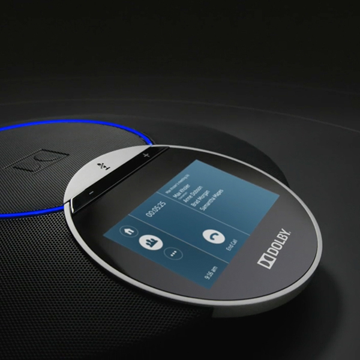
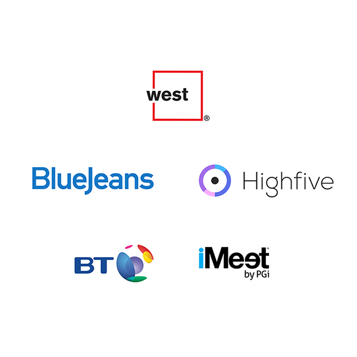
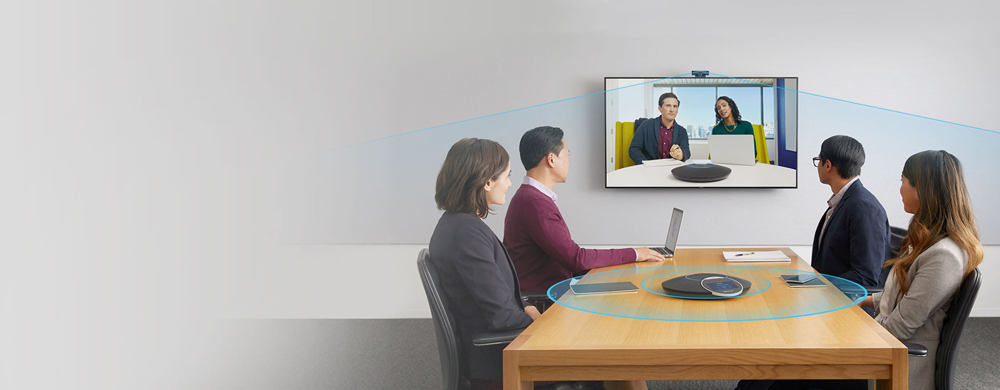
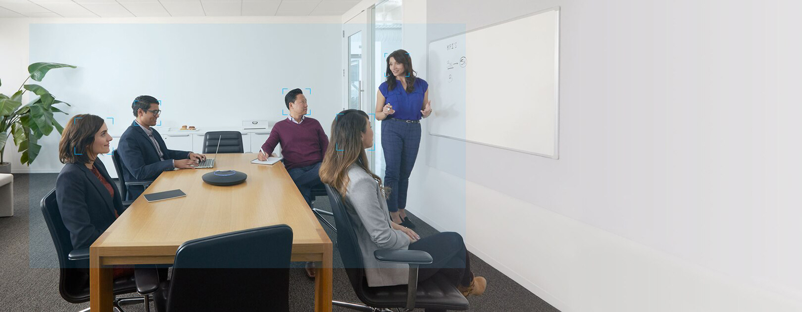
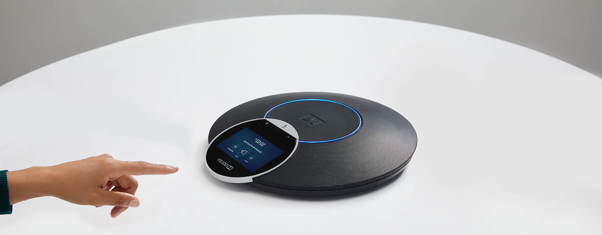

본문영역
Dolby Voice
간편하면서도 탁월한 화상회의
잭 스나이더 감독, 배트맨 대 슈퍼맨: 저스티스의 시작Dolby Voice 고객센터
-

- Dolby 회의용 전화 리셀러
- Dolby 회의용 전화 리셀러를 찾아보세요.
-

- Dolby Voice 서비스 공급자
- Dolby Voice 서비스 공급자를 찾아보세요.
-
- 사례 연구
- 여러 비즈니스가 Dolby Voice를 활용하는 방법에 대해 알아보세요.
Dolby Voice 장점
Dolby 회의용 전화의 장점
-
- 더욱 생산적인 회의를 위한 뛰어난 오디오 환경
- 더욱 뛰어난 음질과 전체 회의실 내 음성 캡처로 부드럽고 멀리 떨어져 있는 음성까지도 잡아 냅니다. Dolby Voice®가 활성화된 서비스와 결합 사용하여 뛰어난 오디오 품질을 얻으세요. 더욱 자연스러운 대화의 흐름을 이어 나갈 수 있고, 공간적으로 멀리 떨어져 있는 발언자의 음성을 적절히 배치하여 대화를 쉽게 따라갈 수 있게 됩니다.
-
- 세련된 디자인에서 단순하고 신속한 사용자 경험을
- 직관적인 터치 스크린 제어로 오늘날의 허들룸, 회의실, 임원 사무실을 보완하는 간소화된 기기에서 회의를 시작하고, 참여하고, 관리할 수 있습니다.
-
- 전화이자 화상 회의를 위한 제어 센터
- 화상 회의 기능을 전화에 통합하여 사용자가 어수선하게 추가 장비를 설치하지 않아도 화상 회의를 시작하고 관리할 수 있는 간단하고 강력한 도구가 되었습니다.
-
- 더욱 쉬운 기기 배포, 제어, 관리 IT 패스
- 지능형 하드웨어 디자인 및 자동화 배포 도구, 앞선 협업 서비스와 통합된 앱 라이브러리로 IT 업무를 단순화할 수 있습니다.
Dolby Voice 특징
-

- Room 읽기
- Dolby Voice® Room은 다양한 공간에서 조명, 동작, 음향 효과 및 음성을 지능적으로 조정하여 원격 참가자를 비롯한 모든 사람에게 멋진 경험을 제공합니다.
-

- 집중하기
- 4K 광각 카메라 및 HDR 비디오 보정은 조명 및 공간 내에서 움직이거나 관심 영역 변경에 따라 조정되어 모두가 회의를 선명하고 프레이밍이 잘 맞게 볼 수 있게 해 줍니다.
-
- 자유로운 대화
- 까다로운 공간에서도 작은 음성까지 조정되는 동적 레벨링 기술을 사용하는 Dolby Voice Room은 잡음을 줄이고 선명함으로 모두가 자연스럽게 대화할 수 있도록 해 줍니다.
-

- 단순함 발견
- 멋지고 매끄러운 디자인을 통해 콘텐츠를 손쉽게 병합, 연결 및 공유하고 원격 기기 관리로 IT가 기기를 배포, 제어 및 모니터링할 수 있도록 지원합니다.